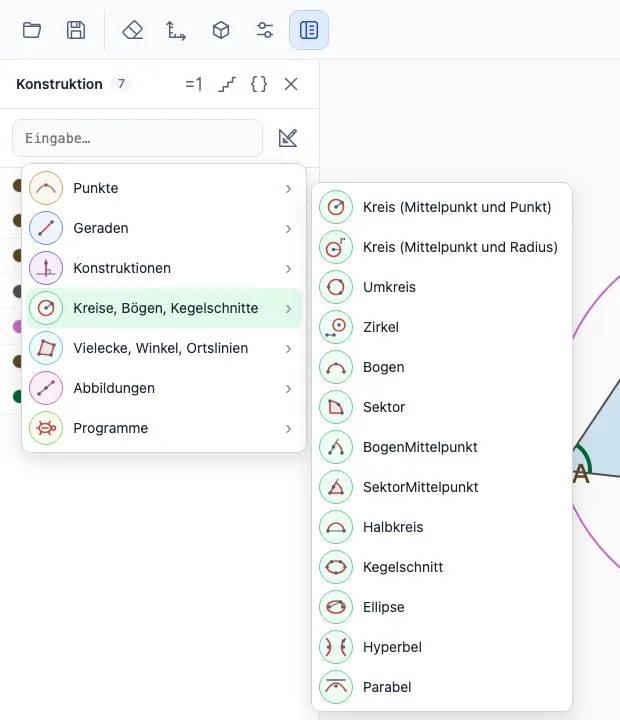

Das Werkzeugmenü

Verwendung
- rechts neben der Eingabezeile öffnet das Menü: die Familien des Rings, gleiche Farben, gleiche Reihenfolge, dann ihre Werkzeuge beim Überfahren oder Antippen.
- Das Menü enthält alle Werkzeuge des Rings und weitere (Kennzeichen Ring unten). Die Familien Ebenen und Körper sowie die mit 3D markierten Werkzeuge erscheinen nur in der 3D-Ansicht.
- Das zuerst gewählte Objekt nimmt jeden Platz ein, den sein Typ zulässt: Bei einer Senkrechten darf die Gerade vor dem Punkt kommen.
- Die Argumente lassen sich auch im Feld „Konstruktion“ wählen: Die Zeilen der Objekte, die das Werkzeug zulässt, sind grün hervorgehoben, die anderen blass. Auch ein verborgenes Objekt lässt sich dort wählen. Ein Punkt lässt sich dort nur wählen, wenn es ihn schon gibt, und der Schnittpunkt zweier Kurven ist ihr erster. Solange das Werkzeug aktiv ist, ändert ein Klick auf eine Zeile sie nicht. Eine bereits gewählte Zeile wird blau, mit ihrem Platz im Befehl (1, 2…).
- Das Werkzeug bleibt aktiv: Nach jedem Objekt wartet es erneut auf sein erstes Argument. Die Menüschaltfläche übernimmt sein Symbol, und die Leiste zeigt ein Band mit Fertig.
- Beenden: Fertig, Esc, ✕ des Hinweises, die Menüschaltfläche (die das Menü wieder öffnet), der Radierer, Schritt für Schritt oder ein Klick in die Eingabezeile. Rückgängig, Wiederherstellen, die Eigenschaften und die 3D-Ansicht behalten das Werkzeug.
Mit einer Auswahl
Zuerst ausgewählte Objekte werden zu den Argumenten des gewählten Werkzeugs: siehe Per Mehrfachauswahl konstruieren.
Alle Werkzeuge
Für jedes Werkzeug: was man wählt, dann die geschriebene Zeile.
Punkte
-
PunktRingDer Punkt, den man antippt: frei an einer leeren Stelle, auf einem Objekt oder im Schnitt zweier Objekte.
Punkt(c, t) -
SchnittpunktRingEin Schnitt mit einem einzigen Antippen, oder die beiden Objekte nacheinander.
Schnittpunkt(a, b) -
MittelpunktRingZwei Punkte oder eine Strecke.
Mittelpunkt(A, B) -
MittelpunktRingEin Kreis: sein Mittelpunkt.
Mittelpunkt(c) -
AndererSchnittpunktZwei Objekte, dann ein Punkt, der bereits auf einem ihrer Schnittpunkte liegt: der Schnittpunkt, der am weitesten von ihm entfernt ist.
AndererSchnittpunkt(a, b, P) -
InkreismittelpunktDrei Punkte, Ecken eines Dreiecks: der Mittelpunkt seines Inkreises.
Inkreismittelpunkt(A, B, C) -
SchwerpunktDrei Punkte: der Schwerpunkt des Dreiecks.
Schwerpunkt(A, B, C) -
UmkreismittelpunktDrei Punkte: der Mittelpunkt des Umkreises.
Umkreismittelpunkt(A, B, C) -
HöhenschnittpunktDrei Punkte: der Höhenschnittpunkt des Dreiecks.
Höhenschnittpunkt(A, B, C)
Geraden
-
StreckeRingZwei Punkte, ihre Endpunkte.
Strecke(A, B) -
GeradeRingZwei Punkte der Geraden.
Gerade(A, B) -
StrahlRingZwei Punkte: der Anfangspunkt, dann ein Punkt des Strahls.
Strahl(A, B) -
VektorRingZwei Punkte: der Anfangspunkt, dann die Spitze.
Vektor(A, B)
Konstruktionen
-
SenkrechteRingEin Punkt und eine Gerade, in beliebiger Reihenfolge. In 3D eine Gerade oder eine Ebene.
Senkrechte(P, d) -
ParalleleRingEin Punkt und eine Gerade, in beliebiger Reihenfolge.
Parallele(P, d) -
MittelsenkrechteRingZwei Punkte oder eine Strecke.
Mittelsenkrechte(A, B) -
WinkelhalbierendeRingDrei Punkte: ein Punkt des ersten Schenkels, der Scheitel, ein Punkt des zweiten Schenkels.
Winkelhalbierende(A, O, B) -
TangenteEin Punkt, dann ein Kreis, ein Kegelschnitt oder der Graph einer Funktion. Das Werkzeug liefert die Tangente Nr. 1; ändern Sie diese Nummer in ihrer Zeile auf 2 für die andere.
Tangente(P, c, 1)
Kreise, Bögen, Kegelschnitte
-
Kreis (Mittelpunkt und Punkt)RingDer Mittelpunkt, dann ein Punkt des Kreises.
Kreis(O, A) -
Kreis (Mittelpunkt und Radius)RingNur der Mittelpunkt: Der Radius, etwa 150 Pixel, wird danach durch Ziehen des Kreises oder in seiner Zeile geändert.
Kreis(O, 3.8) -
UmkreisRingDrei Punkte des Kreises.
Umkreis(A, B, C) -
KugelRing3DDer Mittelpunkt, dann ein Punkt der Kugel.
Kugel(O, A) -
ZirkelZwei Punkte, die den Radius angeben, dann der Mittelpunkt.
Zirkel(A, B, O) -
Kreis (Mittelpunkt, Richtung und Radius)3DDer Mittelpunkt, dann eine Gerade (die Achse) oder eine Ebene (parallel zum Kreis), der Boden eingeschlossen. Radius etwa 150 Pixel.
Kreis(O, 3.8, d) -
Kreis (Achse und Punkt)3DEine Gerade, die Achse, dann ein Punkt des Kreises.
Kreis(d, P) -
BogenDrei Punkte: der Anfang, ein Punkt, durch den er geht, das Ende.
Bogen(A, B, C) -
SektorDrei Punkte, wie beim Bogen: der Sektor, den er begrenzt.
Sektor(A, B, C) -
BogenMittelpunktDer Mittelpunkt, der Anfang, dann ein Punkt des Strahls, an dem der Bogen endet (gegen den Uhrzeigersinn).
BogenMittelpunkt(M, A, B) -
SektorMittelpunktWie
BogenMittelpunkt: der Sektor.SektorMittelpunkt(M, A, B) -
HalbkreisZwei Punkte, Endpunkte des Durchmessers: der Halbkreis links von [AB].
Halbkreis(A, B) -
KegelschnittFünf Punkte des Kegelschnitts. Ab dem zweiten zeigt die Vorschau den Kegelschnitt, der einem Kreis am nächsten kommt.
Kegelschnitt(A, B, C, D, E) -
EllipseDie beiden Brennpunkte, dann ein Punkt der Ellipse.
Ellipse(F, G, P) -
HyperbelDie beiden Brennpunkte, dann ein Punkt der Hyperbel.
Hyperbel(F, G, P) -
ParabelDer Brennpunkt, dann die Leitgerade.
Parabel(F, d)
Vielecke, Winkel, Ortslinien
-
VieleckRingDie Ecken nacheinander, dann zum Schließen noch einmal die erste.
Vieleck(A, B, C) -
WinkelRingDrei Punkte: ein Punkt des ersten Schenkels, der Scheitel, ein Punkt des zweiten Schenkels.
Winkel(A, O, B) -
OrtslinieRingEin Punkt, der von einem Punkt auf Objekt abhängt: seine Ortslinie, wenn dieser Punkt sein Objekt durchläuft.
Ortslinie(M, P) -
RegelmäßigesVieleckZwei aufeinanderfolgende Ecken: Das Werkzeug liefert ein Quadrat; ändern Sie die Anzahl der Seiten in seiner Zeile.
RegelmäßigesVieleck(A, B, 4)
Abbildungen
-
PunktspiegelungRingDer abzubildende Punkt, dann das Zentrum.
Spiegelung(P, O) -
AchsenspiegelungRingDer abzubildende Punkt und die Achse, in beliebiger Reihenfolge.
Spiegelung(P, d) -
DrehungDer Punkt, dann das Zentrum: eine Vierteldrehung, die man in ihrer Zeile ändert.
Drehung(P, O, 90) -
VerschiebungDer Punkt, dann der Vektor.
Verschiebung(P, u) -
StreckungDer Punkt, dann das Zentrum: ein Faktor 2, den man in ihrer Zeile ändert.
Streckung(P, O, 2) -
InversionDer Punkt, dann der Inversionskreis.
Inversion(P, c)
Ebenen
-
Ebene3DDrei Punkte, oder ein Punkt und eine Gerade.
Ebene(A, B, C) -
ParallelEbene3DEin Punkt und eine Ebene (der Boden eingeschlossen): die parallele Ebene durch den Punkt.
ParallelEbene(A, p) -
OrthogonalEbene3DEin Punkt und eine Gerade: die Ebene orthogonal zur Geraden.
OrthogonalEbene(A, d)
Körper
-
Zylinder3DZwei Punkte, Enden der Achse. Radius etwa 150 Pixel.
Zylinder(A, B, 3.8) -
Kegel3DDer Mittelpunkt der Grundfläche, dann die Spitze. Radius etwa 150 Pixel.
Kegel(A, B, 3.8) -
Würfel3DZwei Punkte derselben Ebene oder derselben Höhe, sonst drei Punkte (siehe 3D).
Würfel(A, B, C) -
Prisma3DEin Vieleck, die Grundfläche, dann ein Punkt, Ecke der gegenüberliegenden Fläche.
Prisma(p, P) -
Pyramide3DEin Vieleck, die Grundfläche, dann die Spitze.
Pyramide(p, S) -
Schnitt3DEin Körper (Kugel, Zylinder, Kegel, Polyeder) und eine Ebene, in beliebiger Reihenfolge.
Schnitt(s, p) -
Netz3DEin Würfel, ein Prisma oder eine Pyramide: sein flaches Netz.
Netz(c, 1)
Die Abbildungen erzeugen das Bild eines
Punktes. Nur über die Tastatur:
FesterPunkt, Ecke,
Schieberegler, Liste, die Schnitte im
Raum, Ellipse(F, G, a) und
Hyperbel(F, G, a) (siehe
Die Befehle).